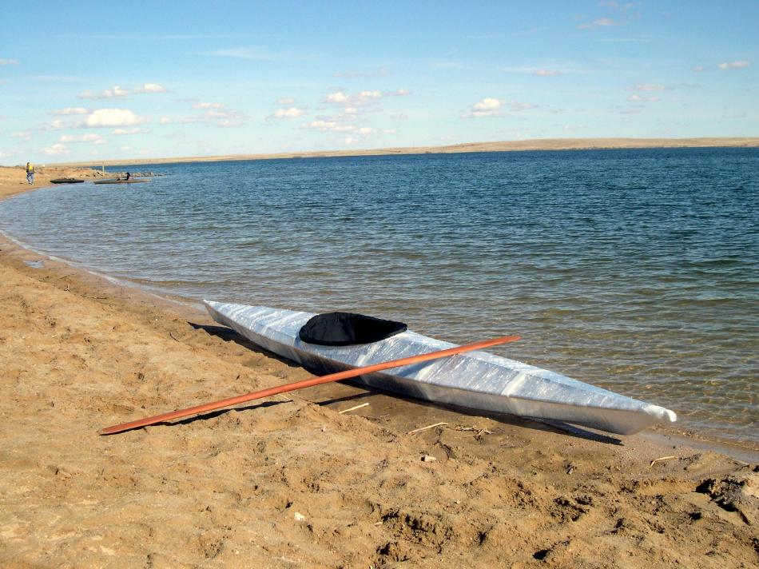

| Sea Otter / Sea Otter - R ( Mini-Review) | Menu Previous Page Next Page |
|
 The Sea Otter - R has a long 13.75ft (419cm) waterline relative to it's 15ft (457cm) length (LOA) with good speed and tracking. It has good initial stability, and excellent final stability. Turning is quick when edged. At 230lbs (104kilos) with paddler, gear, and boat, the freeboard is 2in (5cm). |
|